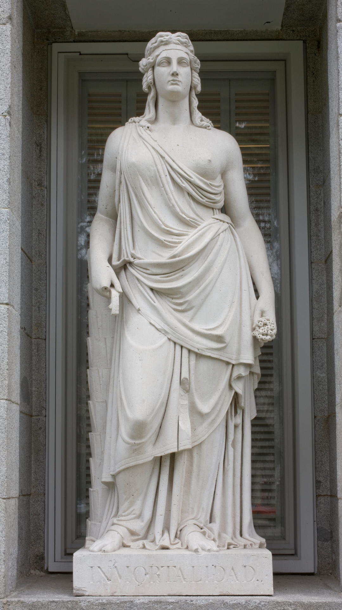
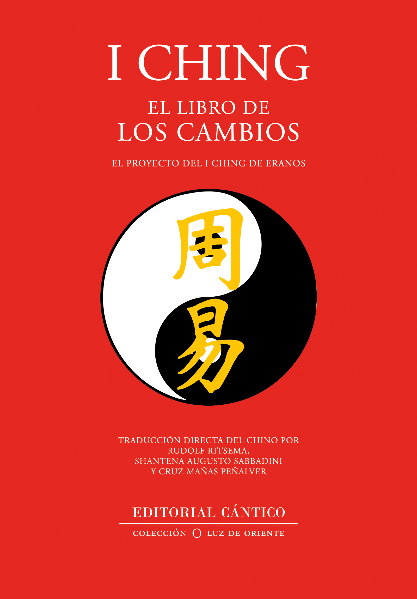
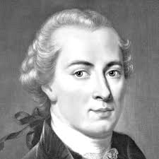

La paz, un concepto muy común entre los seres humanos y muy presente en la historia de la humanidad, es uno de los pilares fundamentales para el bienestar y la estabilidad de las sociedades. Desde tiempos inmemoriales, la búsqueda de la paz ha sido un ideal compartido por culturas, naciones y civilizaciones a lo largo del tiempo. Sin embargo, en la actualidad no está claro ¿qué es la paz? o ¿qué es la cultura de paz? En esta investigación, se definirá a profundidad el concepto de paz, examinando la perspectiva de algunos filósofos y, de manera general, su significado desde el punto de vista de algunos filósofos antiguos. A través de este texto, esperamos transmitir un mensaje claro sobre la importancia vital de la paz en la comunidad estudiantil, así como generar reflexiones que contribuyan a una mejor convivencia.
Introduccion a la Paz
Definicion de la Paz
La paz es un estado de bienestar, tranquilidad, estabilidad y seguridad, que es opuesto a
la guerra y tiene una connotación positiva. Es un estado de armonía que está libre de
guerras, conflictos y contratiempos. La paz es una cualidad deseable universalmente, es
valorada por todas las sociedades y culturas, a nivel de los Estados y países y también en
los hogares, en las relaciones interpersonales y en el interior de cada individuo. Mantener
la paz implica la práctica de valores como la tolerancia, la justicia y una apertura al
diálogo. (De, 2023)
La paz no sólo es la ausencia de conflictos. Convivir en paz consiste en aceptar las
diferencias y tener la capacidad de escuchar, reconocer, respetar y apreciar a los demás,
así como vivir de forma pacífica y unida. (Onu, 2024)
Según la UNESCO “La paz no es solamente un valor que deba regir las relaciones
internacionales. La paz es también un derecho humano del que todas las personas, los
grupos y los pueblos somos titulares: todas y todos tenemos derecho a vivir en paz; todas
y todos tenemos derecho a una paz justa, sostenible y duradera. La paz no es sólo
ausencia de conflictos armados, internos o internacionales. La paz es un concepto mucho
más amplio y positivo que engloba el derecho a ser educado en y para la paz; el derecho
a la seguridad humana y a vivir en un entorno seguro y sano; el derecho al desarrollo y a
un medio ambiente sostenible; el derecho a la desobediencia civil y a la objeción de
conciencia frente a actividades que supongan amenazas contra la paz; el derecho a la
resistencia contra la opresión de los regímenes que violan los derechos humanos; el
derecho a exigir a todos los Estados un desarme general y completo; las libertades de
pensamiento, opinión, expresión, conciencia y religión; el derecho al refugio; el derecho a
emigrar y participar en los asuntos públicos del Estado en que él se resida; y el derecho a
la justicia, a la verdad y a la reparación efectiva que asiste a las víctimas de violaciones
de los derechos humanos.” (UNESCO, 2018)
Sabiendo la definición de la paz podemos definir a “la cultura de paz”. La cultura de la paz
consiste en promover una serie de valores, actitudes y comportamientos, que rechazan la
violencia y previenen los conflictos. Tratan de solucionar los problemas mediante el
diálogo y la negociación de la obligación entre las personas y las naciones, teniendo en
cuenta un punto muy importante que son los derechos, respetándolos e incluyéndolos en
esos tratados. Esta fue definida por resolución de la ONU, siendo aprobada por la
Organización de las Naciones Unidas el 6 de octubre de 1999 en el Quincuagésimo tercer
periodo de sesiones. (WIKIPEDIA, 2021).
Valeriano Salvatierra

I Ching

Immanuel Kant

Martin Luther King

Erasmo de Rotderdam
Conclusion
En conclusión, la paz es un concepto fundamental para el bienestar y la estabilidad de las sociedades, siendo valorada universalmente como un estado de armonía, tranquilidad y seguridad que promueve el diálogo, la tolerancia y la justicia. No se limita simplemente a la ausencia de conflictos, sino que implica el respeto de los derechos humanos, la promoción del desarrollo sostenible y la búsqueda de la verdad y la reparación para las víctimas de violaciones de los derechos humanos. La cultura de paz, por otro lado, se centra en la promoción de valores, actitudes y comportamientos que rechazan la violencia y previenen los conflictos, priorizando el diálogo y la negociación como medios para resolver disputas. Los diversos autores, como Valeriano Salvatierra, el I Ching, Immanuel Kant, Martin Luther King Jr. y Erasmo de Róterdam ofrecen diferentes perspectivas sobre la paz, destacando su importancia y la necesidad de trabajar hacia ella tanto a nivel individual como colectivo para garantizar un mundo más justo y equitativo.